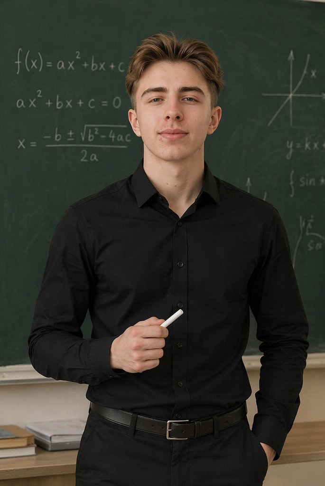

<title>Юрій Ціпіньо</title>
<meta name="claude:viewport-fit-sides" content="cover">
<meta name="description" content="Юрій Ціпіньо — студент, викладаю математику. Прага.">
<link rel="preconnect" href="https://fonts.googleapis.com">
<link rel="preconnect" href="https://fonts.gstatic.com" crossorigin>
<link rel="stylesheet" href="https://fonts.googleapis.com/css2?family=Unbounded:wght@500;700&family=Manrope:wght@400;500;600&family=JetBrains+Mono:wght@400;500&display=swap">
<style>
/* Layout: one narrow column on graph paper; language switch, hero with portrait, about, what I do, links */
:root {
  --paper: #f6f8fb;
  --grid: #e3e9f2;
  --ink: #131a2a;
  --muted: #5a6478;
  --line: #d3dae6;
  --accent: #2b4fd8;
  --accent-soft: #e4eafd;
  --card: #ffffff;
  --f-display: "Unbounded", "Arial Black", system-ui, sans-serif;
  --f-body: "Manrope", "Segoe UI", system-ui, -apple-system, sans-serif;
  --f-mono: "JetBrains Mono", ui-monospace, "SFMono-Regular", Menlo, monospace;
}
@media (prefers-color-scheme: dark) {
  :root:not([data-theme="light"]) {
    --paper: #0f1420; --grid: #1a2131; --ink: #e8ecf4; --muted: #98a2b6;
    --line: #283147; --accent: #8ea6ff; --accent-soft: #1c2647; --card: #151c2c;
    color-scheme: dark;
  }
}
:root[data-theme="dark"] {
  --paper: #0f1420; --grid: #1a2131; --ink: #e8ecf4; --muted: #98a2b6;
  --line: #283147; --accent: #8ea6ff; --accent-soft: #1c2647; --card: #151c2c;
  color-scheme: dark;
}

* { box-sizing: border-box; }
body {
  background-color: var(--paper);
  background-image:
    linear-gradient(var(--grid) 1px, transparent 1px),
    linear-gradient(90deg, var(--grid) 1px, transparent 1px);
  background-size: 24px 24px;
  color: var(--ink);
  font-family: var(--f-body);
  font-size: 17px;
  line-height: 1.65;
}
a { color: var(--accent); }
a:focus-visible, button:focus-visible { outline: 2px solid var(--accent); outline-offset: 3px; border-radius: 6px; }

.wrap {
  max-width: 760px;
  margin: 0 auto;
  padding-left: max(16px, env(safe-area-inset-left, 0px));
  padding-right: max(16px, env(safe-area-inset-right, 0px));
  padding-block: 28px 40px;
  display: grid;
  gap: 56px;
}

/* Language switch */
.topbar { display: flex; justify-content: flex-end; align-items: center; gap: 8px; margin-bottom: -28px; }
.theme-btn {
  display: grid;
  place-items: center;
  width: 36px;
  height: 36px;
  padding: 0;
  background: var(--card);
  border: 1px solid var(--line);
  border-radius: 50%;
  color: var(--ink);
  cursor: pointer;
}
.theme-btn:hover { border-color: var(--accent); color: var(--accent); }
/* Show the icon of the theme you'd switch TO */
.theme-btn .i-sun { display: none; }
.is-dark .theme-btn .i-sun { display: block; }
.is-dark .theme-btn .i-moon { display: none; }
.lang {
  display: inline-flex;
  gap: 2px;
  padding: 3px;
  background: var(--card);
  border: 1px solid var(--line);
  border-radius: 999px;
}
.lang button {
  font-family: var(--f-mono);
  font-size: 13px;
  font-weight: 500;
  letter-spacing: 0.04em;
  color: var(--muted);
  background: transparent;
  border: 0;
  border-radius: 999px;
  padding: 5px 12px;
  cursor: pointer;
}
.lang button:hover { color: var(--ink); }
.lang button[aria-pressed="true"] { background: var(--accent); color: var(--card); }

/* Hero */
.hero {
  display: grid;
  grid-template-columns: 210px minmax(0, 1fr);
  gap: 36px;
  align-items: center;
}
.photo {
  width: 210px;
  max-width: 100%;
  aspect-ratio: 3 / 4;
  border-radius: 18px;
  border: 2px solid var(--ink);
  overflow: hidden;
  background: var(--accent-soft);
  box-shadow: 8px 8px 0 var(--accent-soft);
}
.photo img { width: 100%; height: 100%; object-fit: cover; object-position: center top; display: block; }
.eyebrow {
  font-family: var(--f-mono);
  font-size: 13px;
  letter-spacing: 0.06em;
  color: var(--muted);
  margin: 0 0 8px;
}
h1 {
  font-family: var(--f-display);
  font-weight: 700;
  font-size: clamp(32px, 6vw, 48px);
  line-height: 1.1;
  margin: 0 0 14px;
  text-wrap: balance;
}
.lead { margin: 0; font-size: 19px; max-width: 34em; }

/* Sections */
section { display: grid; gap: 16px; }
h2 {
  font-family: var(--f-mono);
  font-weight: 500;
  font-size: 14px;
  letter-spacing: 0.08em;
  text-transform: uppercase;
  color: var(--muted);
  margin: 0;
  display: flex;
  align-items: center;
  gap: 12px;
}
h2::after { content: ""; flex: 1; height: 1px; background: var(--line); }
p { margin: 0; max-width: 65ch; }
.about { display: grid; gap: 12px; }
.edu { list-style: none; margin: 0; padding: 0; display: grid; gap: 10px; }
.edu li {
  display: grid;
  grid-template-columns: minmax(0, 1fr) minmax(0, 1fr);
  gap: 4px 20px;
  align-items: baseline;
  padding: 14px 18px;
  background: var(--card);
  border: 1px solid var(--line);
  border-left: 3px solid var(--accent);
  border-radius: 10px;
}
.edu .school { font-weight: 600; }
.edu .major { color: var(--muted); }
@media (max-width: 600px) { .edu li { grid-template-columns: 1fr; } }

/* Activity card */
.project {
  background: var(--card);
  border: 1px solid var(--line);
  border-radius: 14px;
  padding: 24px;
  display: grid;
  gap: 10px;
}
.project-head { display: flex; flex-wrap: wrap; align-items: baseline; justify-content: space-between; gap: 8px 16px; }
.project h3 { font-family: var(--f-display); font-weight: 500; font-size: 22px; margin: 0; text-wrap: balance; }
.tag {
  font-family: var(--f-mono);
  font-size: 13px;
  color: var(--accent);
  background: var(--accent-soft);
  padding: 3px 10px;
  border-radius: 999px;
}
.project a { font-weight: 600; text-decoration: none; }
.project a:hover { text-decoration: underline; }

/* Links */
.links { list-style: none; margin: 0; padding: 0; display: grid; grid-template-columns: repeat(2, minmax(0, 1fr)); gap: 12px; }
.links a {
  display: grid;
  gap: 2px;
  padding: 14px 18px;
  background: var(--card);
  border: 1px solid var(--line);
  border-radius: 12px;
  color: var(--ink);
  text-decoration: none;
  transition: border-color .15s, transform .15s;
}
.links a:hover { border-color: var(--accent); transform: translateY(-1px); }
.links .name { font-weight: 600; }
.links .handle { font-family: var(--f-mono); font-size: 13px; color: var(--muted); overflow-wrap: anywhere; }

footer { font-family: var(--f-mono); font-size: 13px; color: var(--muted); display: flex; flex-wrap: wrap; justify-content: space-between; gap: 8px; border-top: 1px solid var(--line); padding-top: 20px; }

@media (max-width: 600px) {
  .wrap { padding-block: 20px 32px; gap: 44px; }
  .topbar { margin-bottom: -20px; }
  .hero { grid-template-columns: 1fr; gap: 24px; }
  .photo { width: 180px; }
  .links { grid-template-columns: 1fr; }
}
.hobbies { display: flex; flex-wrap: wrap; align-items: center; gap: 8px; }
.hobbies-label { color: var(--muted); margin-right: 2px; }
.chip {
  font-size: 15px; font-weight: 600; padding: 4px 14px; border-radius: 999px;
  border: 1px solid var(--line); background: var(--card);
  transition: transform .25s cubic-bezier(.2,.7,.2,1), border-color .25s, color .25s;
}
.chip:hover { transform: translateY(-2px) rotate(-3deg); border-color: var(--accent); color: var(--accent); }
section:nth-of-type(4) { animation-delay: .45s; }

.rating { display: flex; flex-wrap: wrap; align-items: center; gap: 6px 14px; }
.rating-num { font-family: var(--f-display); font-weight: 700; font-size: 34px; line-height: 1; }
.stars { color: #f2b70f; font-size: 20px; letter-spacing: 2px; }
.rating-meta { color: var(--muted); font-size: 15px; }
.reviews { display: grid; grid-template-columns: repeat(2, minmax(0, 1fr)); gap: 12px; align-items: start; }
.review {
  margin: 0; position: relative; display: grid; gap: 14px;
  padding: 22px 22px 18px; background: var(--card);
  border: 1px solid var(--line); border-radius: 14px;
  transition: transform .25s cubic-bezier(.2,.7,.2,1), border-color .25s, box-shadow .25s;
}
.review::before {
  content: "“"; position: absolute; top: -6px; right: 16px;
  font-family: var(--f-display); font-size: 72px; line-height: 1; color: var(--accent-soft);
  transition: color .25s, transform .25s;
}
.review:hover { transform: translateY(-3px); border-color: var(--accent); box-shadow: 0 12px 30px -16px var(--accent); }
.review:hover::before { color: var(--accent); transform: rotate(-8deg); }
.review blockquote { margin: 0; position: relative; font-size: 17px; }
.review figcaption { display: flex; justify-content: space-between; gap: 8px; flex-wrap: wrap; }
.rev-name { font-weight: 600; }
.rev-date { font-family: var(--f-mono); font-size: 13px; color: var(--muted); }
section:nth-of-type(5) { animation-delay: .55s; }
@media (max-width: 600px) { .reviews { grid-template-columns: 1fr; } }

/* ---------- Sticky bar (appears after scrolling past the hero) ---------- */
.stickybar {
  position: fixed; top: 0; left: 0; right: 0; z-index: 20;
  padding-top: env(safe-area-inset-top, 0px);
  background: color-mix(in srgb, var(--card) 82%, transparent);
  backdrop-filter: blur(12px) saturate(1.4);
  -webkit-backdrop-filter: blur(12px) saturate(1.4);
  border-bottom: 1px solid var(--line);
  box-shadow: 0 10px 30px -22px var(--ink);
  transform: translateY(-110%);
  transition: transform .45s cubic-bezier(.2,.7,.2,1);
}
.stickybar.show { transform: none; }
.sb-inner {
  max-width: 760px; margin: 0 auto;
  padding-left: max(16px, env(safe-area-inset-left, 0px));
  padding-right: max(16px, env(safe-area-inset-right, 0px));
  padding-block: 10px;
  display: flex; align-items: center; gap: 16px;
}
.sb-me { display: flex; align-items: center; gap: 10px; text-decoration: none; color: var(--ink); min-width: 0; }
.sb-me img { width: 34px; height: 34px; border-radius: 50%; object-fit: cover; object-position: center 15%; border: 2px solid var(--accent); transition: transform .3s; }
.sb-me:hover img { transform: rotate(-8deg) scale(1.08); }
.sb-text { display: grid; line-height: 1.2; min-width: 0; }
.sb-name { font-family: var(--f-display); font-weight: 500; font-size: 14px; white-space: nowrap; }
.sb-sub { font-family: var(--f-mono); font-size: 11px; color: var(--muted); white-space: nowrap; }
.sb-nav { display: flex; gap: 4px; margin-left: auto; }
.sb-nav a {
  position: relative; font-size: 14px; font-weight: 500; color: var(--muted);
  text-decoration: none; padding: 6px 10px; border-radius: 8px; white-space: nowrap;
  transition: color .2s, background .2s;
}
.sb-nav a:hover { color: var(--ink); background: var(--accent-soft); }
.sb-nav a.active { color: var(--accent); }
.sb-nav a.active::after { content: ""; position: absolute; left: 10px; right: 10px; bottom: 1px; height: 2px; border-radius: 2px; background: var(--accent); }
.sb-cta {
  flex: none; font-size: 14px; font-weight: 600; text-decoration: none;
  color: var(--card); background: var(--accent);
  padding: 7px 14px; border-radius: 999px;
  transition: transform .2s, box-shadow .2s;
}
.sb-cta:hover { transform: translateY(-1px); box-shadow: 0 8px 18px -8px var(--accent); }
.sb-progress { height: 2px; background: var(--accent); transform-origin: left; transform: scaleX(0); }
section { scroll-margin-top: 80px; }
@media (max-width: 900px) {
  .sb-nav { display: none; }
  .sb-cta { margin-left: auto; }
}

/* ---------- Motion ---------- */
#bg { position: fixed; inset: 0; width: 100%; height: 100%; z-index: 0; pointer-events: none; }
.wrap { position: relative; z-index: 1; }

/* Page-load: sections rise in one after another */
@keyframes rise { from { opacity: 0; transform: translateY(14px); } to { opacity: 1; transform: none; } }
.topbar, .hero, section, footer { animation: rise .7s cubic-bezier(.2,.7,.2,1) both; }
.hero { animation-delay: .05s; }
section:nth-of-type(1) { animation-delay: .15s; }
section:nth-of-type(2) { animation-delay: .25s; }
section:nth-of-type(3) { animation-delay: .35s; }
footer { animation-delay: .65s; }

/* Name: accent underline draws in */
h1 { position: relative; display: inline-block; }
h1::after {
  content: ""; position: absolute; left: 0; bottom: -6px; height: 4px; width: 100%;
  background: var(--accent); border-radius: 2px; transform-origin: left;
  animation: draw 1s .5s cubic-bezier(.2,.7,.2,1) both;
}
@keyframes draw { from { transform: scaleX(0); } to { transform: scaleX(.35); } }
.hero:hover h1::after { transform: scaleX(1); transition: transform .5s cubic-bezier(.2,.7,.2,1); }

/* Photo: gentle tilt and shadow shift */
.photo { transition: transform .4s cubic-bezier(.2,.7,.2,1), box-shadow .4s; }
.photo img { transition: transform .6s cubic-bezier(.2,.7,.2,1); }
.photo:hover { transform: rotate(-2deg) translateY(-4px); box-shadow: 14px 14px 0 var(--accent-soft); }
.photo:hover img { transform: scale(1.05); }

/* Section titles: rule grows on hover */
h2::after { transform-origin: left; transition: transform .5s, background .3s; }
section:hover h2::after { background: var(--accent); }

/* Cards */
.project, .edu li { transition: transform .25s cubic-bezier(.2,.7,.2,1), border-color .25s, box-shadow .25s; }
.project:hover { transform: translateY(-3px); border-color: var(--accent); box-shadow: 0 12px 30px -16px var(--accent); }
.edu li:hover { transform: translateX(6px); border-color: var(--accent); }
.tag { transition: background .25s, color .25s; }
.project:hover .tag { background: var(--accent); color: var(--card); }
.project a .arrow { display: inline-block; transition: transform .25s; }
.project a:hover .arrow { transform: translateX(5px); }

/* Social links: lift, glow, sliding arrow, shine sweep */
.links a { position: relative; overflow: hidden; grid-template-columns: minmax(0,1fr) auto; align-items: center; transition: border-color .25s, transform .25s cubic-bezier(.2,.7,.2,1), box-shadow .25s; }
.links a > span { grid-column: 1; }
.links a::before {
  content: "→"; grid-column: 2; grid-row: 1 / span 2; color: var(--accent);
  font-family: var(--f-mono); transform: translateX(-6px); opacity: .35;
  transition: transform .25s, opacity .25s;
}
.links a::after {
  content: ""; position: absolute; inset: 0; pointer-events: none;
  background: linear-gradient(110deg, transparent 30%, var(--accent-soft) 50%, transparent 70%);
  transform: translateX(-100%);
}
.links a:hover { transform: translateY(-4px); box-shadow: 0 14px 30px -18px var(--accent); }
.links a:hover::before { transform: translateX(0); opacity: 1; }
.links a:hover::after { transform: translateX(100%); transition: transform .7s ease; }
.links a:active { transform: translateY(-1px) scale(.98); }

/* Topbar controls */
.lang button { transition: background .25s, color .25s, transform .15s; }
.lang button:active { transform: scale(.92); }
.theme-btn { transition: border-color .25s, color .25s, transform .4s cubic-bezier(.2,.7,.2,1); }
.theme-btn:hover { transform: rotate(25deg) scale(1.08); }
.theme-btn:active { transform: rotate(180deg) scale(.95); }

@media (prefers-reduced-motion: reduce) {
  *, *::before, *::after { animation: none !important; transition: none !important; }
  h1::after { transform: scaleX(.35); }
}
</style>

<canvas id="bg" aria-hidden="true"></canvas>

<nav class="stickybar" id="stickybar" aria-label="Навігація">
  <div class="sb-inner">
    <a href="#top" class="sb-me" data-scroll="top">
      
      <span class="sb-text">
        <span class="sb-name" data-i18n="name">Юрій Ціпіньо</span>
        <span class="sb-sub" data-i18n="sbSub">студент · математика</span>
      </span>
    </a>
    <div class="sb-nav">
      <a href="#about" data-scroll="about" data-i18n="aboutTitle">Про мене</a>
      <a href="#achievements" data-scroll="achievements" data-i18n="achTitle">Досягнення</a>
      <a href="#now" data-scroll="now" data-i18n="nowTitle">Чим займаюся</a>
      <a href="#reviews" data-scroll="reviews" data-i18n="navReviews">Відгуки</a>
      <a href="#links" data-scroll="links" data-i18n="navLinks">Контакти</a>
    </div>
    <a class="sb-cta" href="https://preply.in/YURII6UA40151528102?ts=17921558" target="_blank" rel="noopener" data-i18n="ctaPreply">Записатися</a>
  </div>
  <div class="sb-progress" id="sb-progress"></div>
</nav>

<main class="wrap">

  <div class="topbar">
    <button type="button" id="theme-toggle" class="theme-btn" aria-label="Тема">
      <svg class="i-sun" viewBox="0 0 24 24" width="18" height="18" aria-hidden="true" fill="none" stroke="currentColor" stroke-width="2" stroke-linecap="round"><circle cx="12" cy="12" r="4"/><path d="M12 2v2M12 20v2M4.9 4.9l1.4 1.4M17.7 17.7l1.4 1.4M2 12h2M20 12h2M4.9 19.1l1.4-1.4M17.7 6.3l1.4-1.4"/></svg>
      <svg class="i-moon" viewBox="0 0 24 24" width="18" height="18" aria-hidden="true" fill="none" stroke="currentColor" stroke-width="2" stroke-linecap="round" stroke-linejoin="round"><path d="M21 12.8A9 9 0 1 1 11.2 3a7 7 0 0 0 9.8 9.8z"/></svg>
    </button>
    <div class="lang" role="group" aria-label="Мова / Jazyk / Language">
      <button type="button" id="lang-uk" data-lang="uk" aria-pressed="true">UA</button>
      <button type="button" id="lang-cs" data-lang="cs" aria-pressed="false">CZ</button>
      <button type="button" id="lang-en" data-lang="en" aria-pressed="false">EN</button>
    </div>
  </div>

  <header class="hero">
    <div class="photo"></div>
    <div>
      <p class="eyebrow" data-i18n="eyebrow">Прага · студент · математика</p>
      <h1 data-i18n="name">Юрій Ціпіньо</h1>
      <p class="lead" data-i18n="lead">Привіт! Я студент, люблю математику й технології, а у вільний час викладаю.</p>
    </div>
  </header>

  <section aria-labelledby="about">
    <h2 id="about" data-i18n="aboutTitle">Про мене</h2>
    <div class="about">
      <p data-i18n="about1">Зараз навчаюся одночасно у двох закладах:</p>
      <ul class="edu">
        <li><span class="school" data-i18n="cuni">Карлів університет, Прага</span><span class="major" data-i18n="cuniMajor">Загальна математика</span></li>
        <li><span class="school" data-i18n="zpfk">ЗПФК</span><span class="major" data-i18n="zpfkMajor">121 Інженерія програмного забезпечення</span></li>
      </ul>
      <div class="hobbies">
        <span class="hobbies-label" data-i18n="hobbiesLabel">Поза навчанням граю у</span>
        <span class="chip" data-i18n="volley">волейбол</span>
        <span class="chip" data-i18n="tennis">теніс</span>
      </div>
      <p data-i18n="about2">Мені подобається розбиратися, як усе влаштовано, і пояснювати складне простими словами. Тут з’являтимуться мої проєкти та все, чим я займаюся.</p>
    </div>
  </section>

  <section aria-labelledby="achievements">
    <h2 id="achievements" data-i18n="achTitle">Досягнення</h2>
    <ul class="edu">
      <li><span class="school" data-i18n="ach1">Чеська мова — B2</span><span class="major" data-i18n="ach1d">Сертифікат після мовних курсів</span></li>
      <li><span class="school" data-i18n="ach2">Олімпіади обласного рівня</span><span class="major" data-i18n="ach2d">Учасник у школі та в коледжі</span></li>
    </ul>
  </section>

  <section aria-labelledby="now">
    <h2 id="now" data-i18n="nowTitle">Чим займаюся</h2>
    <article class="project">
      <div class="project-head">
        <h3 data-i18n="preplyTitle">Уроки математики на Preply</h3>
        <span class="tag" data-i18n="preplyTag">викладаю</span>
      </div>
      <p data-i18n="preplyText">Проводжу індивідуальні онлайн-уроки з математики. Якщо хочеш позайматися, мій профіль тут.</p>
      <a href="https://preply.in/YURII6UA40151528102?ts=17921558" target="_blank" rel="noopener"><span data-i18n="preplyLink">Мій профіль на Preply</span> <span class="arrow" aria-hidden="true">→</span></a>
    </article>
    <article class="project">
      <div class="project-head">
        <h3 data-i18n="czTitle">Порада щодо навчання в Чехії</h3>
        <span class="tag" data-i18n="czTag">консультації</span>
      </div>
      <p data-i18n="czText">Я сам пройшов мовні курси й навчаюся в Карловому університеті, тому можу підказати щодо вступу, вивчення чеської та студентського життя в Празі.</p>
      <a href="https://t.me/pelehatiiy" target="_blank" rel="noopener"><span data-i18n="czLink">Написати в Telegram</span> <span class="arrow" aria-hidden="true">→</span></a>
    </article>
  </section>

  <section aria-labelledby="reviews">
    <h2 id="reviews" data-i18n="revTitle">Відгуки учнів</h2>
    <div class="rating">
      <span class="rating-num">5.0</span>
      <span class="stars" aria-label="5/5">★★★★★</span>
      <span class="rating-meta" data-i18n="revMeta">2 відгуки на Preply</span>
    </div>
    <div class="reviews">
      <figure class="review">
        <blockquote data-i18n="rev1">Велике спасибі Юрію за професіоналізм і абсолютно доступний підхід до навчання! Звісно, підписуємося на постійні заняття і рекомендую з повною відповідальністю!</blockquote>
        <figcaption><span class="rev-name">Sam</span><span class="rev-date" data-i18n="rev1date">10 вересня 2026</span></figcaption>
      </figure>
      <figure class="review">
        <blockquote data-i18n="rev2">Дуже класний вчитель.</blockquote>
        <figcaption><span class="rev-name" data-i18n="rev2name">Олена</span><span class="rev-date" data-i18n="rev2date">8 вересня 2026</span></figcaption>
      </figure>
    </div>
  </section>

  <section aria-labelledby="links">
    <h2 id="links" data-i18n="linksTitle">Де мене знайти</h2>
    <ul class="links">
      <li><a href="https://t.me/pelehatiiy" target="_blank" rel="noopener"><span class="name">Telegram</span><span class="handle">@pelehatiiy</span></a></li>
      <li><a href="https://www.instagram.com/pelehatiiy/" target="_blank" rel="noopener"><span class="name">Instagram</span><span class="handle">@pelehatiiy</span></a></li>
      <li><a href="mailto:tsipinoy@matfyz.cz"><span class="name">Email</span><span class="handle">tsipinoy@matfyz.cz</span></a></li>
      <li><a href="https://preply.in/YURII6UA40151528102?ts=17921558" target="_blank" rel="noopener"><span class="name">Preply</span><span class="handle" data-i18n="preplyHandle">уроки математики</span></a></li>
    </ul>
  </section>

  <footer>
    <span data-i18n="copyright">© 2026 Юрій Ціпіньо</span>
    <span data-i18n="city">Прага</span>
  </footer>

</main>

<script>
const T = {
  uk: {
    title: "Юрій Ціпіньо",
    name: "Юрій Ціпіньо",
    eyebrow: "Прага · студент · математика",
    lead: "Привіт! Я студент, люблю математику й технології, а у вільний час викладаю.",
    aboutTitle: "Про мене",
    about1: "Зараз навчаюся одночасно у двох закладах:",
    cuni: "Карлів університет, Прага",
    cuniMajor: "Загальна математика",
    zpfk: "ЗПФК",
    zpfkMajor: "121 Інженерія програмного забезпечення",
    about2: "Мені подобається розбиратися, як усе влаштовано, і пояснювати складне простими словами. Тут з’являтимуться мої проєкти та все, чим я займаюся.",
    nowTitle: "Чим займаюся",
    preplyTitle: "Уроки математики на Preply",
    preplyTag: "викладаю",
    preplyText: "Проводжу індивідуальні онлайн-уроки з математики. Якщо хочеш позайматися, мій профіль тут.",
    preplyLink: "Мій профіль на Preply",
    linksTitle: "Де мене знайти",
    preplyHandle: "уроки математики",
    copyright: "© 2026 Юрій Ціпіньо",
    city: "Прага",
    hobbiesLabel: "Поза навчанням граю у",
    volley: "волейбол",
    tennis: "теніс",
    achTitle: "Досягнення",
    ach1: "Чеська мова — B2",
    ach1d: "Сертифікат після мовних курсів",
    ach2: "Олімпіади обласного рівня",
    ach2d: "Учасник у школі та в коледжі",
    czTitle: "Порада щодо навчання в Чехії",
    czTag: "консультації",
    czText: "Я сам пройшов мовні курси й навчаюся в Карловому університеті, тому можу підказати щодо вступу, вивчення чеської та студентського життя в Празі.",
    czLink: "Написати в Telegram",
    revTitle: "Відгуки учнів",
    revMeta: "2 відгуки на Preply",
    rev1: "Велике спасибі Юрію за професіоналізм і абсолютно доступний підхід до навчання! Звісно, підписуємося на постійні заняття і рекомендую з повною відповідальністю!",
    rev1date: "10 вересня 2026",
    rev2: "Дуже класний вчитель.",
    rev2name: "Олена",
    rev2date: "8 вересня 2026",
    navReviews: "Відгуки",
    sbSub: "студент · математика",
    navLinks: "Контакти",
    ctaPreply: "Записатися"
  },
  cs: {
    title: "Yurii Tsipino",
    name: "Yurii Tsipino",
    eyebrow: "Praha · student · matematika",
    lead: "Ahoj! Jsem student, baví mě matematika a technologie a ve volném čase učím.",
    aboutTitle: "O mně",
    about1: "Momentálně studuji souběžně na dvou školách:",
    cuni: "Univerzita Karlova, Praha",
    cuniMajor: "Obecná matematika",
    zpfk: "ZPFK",
    zpfkMajor: "121 Softwarové inženýrství",
    about2: "Rád zjišťuji, jak věci fungují, a vysvětluji složité věci jednoduše. Postupně sem budu přidávat své projekty a vše, čemu se věnuji.",
    nowTitle: "Čemu se věnuji",
    preplyTitle: "Doučování matematiky na Preply",
    preplyTag: "učím",
    preplyText: "Vedu individuální online lekce matematiky. Pokud se chceš doučovat, tady je můj profil.",
    preplyLink: "Můj profil na Preply",
    linksTitle: "Kde mě najdeš",
    preplyHandle: "doučování matematiky",
    copyright: "© 2026 Yurii Tsipino",
    city: "Praha",
    hobbiesLabel: "Ve volném čase hraju",
    volley: "volejbal",
    tennis: "tenis",
    achTitle: "Úspěchy",
    ach1: "Čeština — B2",
    ach1d: "Certifikát po jazykovém kurzu",
    ach2: "Olympiády krajského kola",
    ach2d: "Účast na škole i na koleji",
    czTitle: "Poradím se studiem v Česku",
    czTag: "konzultace",
    czText: "Sám jsem prošel jazykovým kurzem a studuji na Univerzitě Karlově, takže ti poradím s přijímačkami, češtinou i studentským životem v Praze.",
    czLink: "Napsat na Telegram",
    revTitle: "Recenze studentů",
    revMeta: "2 recenze na Preply (přeloženo)",
    rev1: "Velké díky Yuriimu za profesionalitu a naprosto srozumitelný přístup k výuce! Určitě se přihlásíme na pravidelné lekce a s plnou odpovědností ho doporučuji!",
    rev1date: "10. září 2026",
    rev2: "Moc super učitel.",
    rev2name: "Olena",
    rev2date: "8. září 2026",
    navReviews: "Recenze",
    sbSub: "student · matematika",
    navLinks: "Kontakty",
    ctaPreply: "Objednat lekci"
  },
  en: {
    title: "Yurii Tsipino",
    name: "Yurii Tsipino",
    eyebrow: "Prague · student · math",
    lead: "Hi! I'm a student who loves math and technology, and I teach in my spare time.",
    aboutTitle: "About me",
    about1: "I'm currently studying at two schools at once:",
    cuni: "Charles University, Prague",
    cuniMajor: "General Mathematics",
    zpfk: "ZPFK",
    zpfkMajor: "121 Software Engineering",
    about2: "I like figuring out how things work and explaining complex ideas in simple words. My projects and everything I'm up to will appear here.",
    nowTitle: "What I do",
    preplyTitle: "Math lessons on Preply",
    preplyTag: "teaching",
    preplyText: "I give one-on-one online math lessons. If you'd like to study with me, here's my profile.",
    preplyLink: "My Preply profile",
    linksTitle: "Find me",
    preplyHandle: "math lessons",
    copyright: "© 2026 Yurii Tsipino",
    city: "Prague",
    hobbiesLabel: "Outside of studying I play",
    volley: "volleyball",
    tennis: "tennis",
    achTitle: "Achievements",
    ach1: "Czech language — B2",
    ach1d: "Certificate after language courses",
    ach2: "Regional-level olympiads",
    ach2d: "Took part at school and at college",
    czTitle: "Advice on studying in Czechia",
    czTag: "consulting",
    czText: "I went through Czech language courses and now study at Charles University, so I can help with admissions, learning Czech and student life in Prague.",
    czLink: "Message me on Telegram",
    revTitle: "Student reviews",
    revMeta: "2 reviews on Preply (translated)",
    rev1: "Huge thanks to Yurii for his professionalism and truly accessible approach to learning! We're definitely signing up for regular lessons, and I recommend him with full confidence!",
    rev1date: "September 10, 2026",
    rev2: "A really great teacher.",
    rev2name: "Olena",
    rev2date: "September 8, 2026",
    navReviews: "Reviews",
    sbSub: "student · math",
    navLinks: "Contacts",
    ctaPreply: "Book a lesson"
  }
};

function setLang(lang) {
  if (!T[lang]) lang = "uk";
  const d = T[lang];
  document.documentElement.lang = lang;
  document.title = d.title;
  document.querySelectorAll("[data-i18n]").forEach(el => { el.textContent = d[el.dataset.i18n]; });
  document.querySelectorAll("[data-i18n-alt]").forEach(el => { el.alt = d[el.dataset.i18nAlt]; });
  document.querySelectorAll(".lang button").forEach(b => b.setAttribute("aria-pressed", String(b.dataset.lang === lang)));
  try { localStorage.setItem("lang", lang); } catch (e) {}
  if (document.getElementById("theme-toggle") && typeof syncThemeBtn === "function") syncThemeBtn();
}

// Theme: light / dark toggle, remembered per visitor; default follows the system
const root = document.documentElement;
const darkMq = window.matchMedia("(prefers-color-scheme: dark)");
const themeLabels = { uk: ["Світла тема", "Темна тема"], cs: ["Světlý režim", "Tmavý režim"], en: ["Light mode", "Dark mode"] };
function isDark() {
  const t = root.getAttribute("data-theme");
  return t ? t === "dark" : darkMq.matches;
}
function syncThemeBtn() {
  const dark = isDark();
  root.classList.toggle("is-dark", dark);
  const l = themeLabels[root.lang] || themeLabels.uk;
  const btn = document.getElementById("theme-toggle");
  btn.setAttribute("aria-label", dark ? l[0] : l[1]);
  btn.title = dark ? l[0] : l[1];
}
function setTheme(t) {
  root.setAttribute("data-theme", t);
  try { localStorage.setItem("theme", t); } catch (e) {}
  syncThemeBtn();
}
try { const saved = localStorage.getItem("theme"); if (saved === "light" || saved === "dark") root.setAttribute("data-theme", saved); } catch (e) {}
document.getElementById("theme-toggle").addEventListener("click", () => setTheme(isDark() ? "light" : "dark"));
darkMq.addEventListener("change", syncThemeBtn);

document.querySelectorAll(".lang button").forEach(b => b.addEventListener("click", () => setLang(b.dataset.lang)));

// Start: #en / #cs / #uk in the link, then the saved choice, then the browser language
let start = location.hash.replace("#", "");
if (!T[start]) { try { start = localStorage.getItem("lang"); } catch (e) { start = null; } }
if (!T[start]) {
  const nav = (navigator.language || "uk").slice(0, 2);
  start = (nav === "uk" || nav === "ru") ? "uk" : (nav === "cs" || nav === "sk") ? "cs" : "en";
}
setLang(start);

// Sticky bar: show after the hero, highlight the current section, scroll progress
(function () {
  const bar = document.getElementById("stickybar");
  const hero = document.querySelector(".hero");
  const prog = document.getElementById("sb-progress");
  const navLinks = [...bar.querySelectorAll(".sb-nav a")];
  const smooth = window.matchMedia("(prefers-reduced-motion: reduce)").matches ? "auto" : "smooth";

  function onScroll() {
    const heroBottom = hero.getBoundingClientRect().bottom;
    bar.classList.toggle("show", heroBottom < 40);
    const max = document.documentElement.scrollHeight - window.innerHeight;
    prog.style.transform = `scaleX(${max > 0 ? Math.min(1, window.scrollY / max) : 0})`;
    let current = null;
    document.querySelectorAll("main section").forEach(s => {
      if (s.getBoundingClientRect().top < window.innerHeight * 0.4) current = s.querySelector("h2").id;
    });
    if (window.innerHeight + window.scrollY >= document.documentElement.scrollHeight - 4) current = "links";
    navLinks.forEach(a => a.classList.toggle("active", a.dataset.scroll === current));
  }
  window.addEventListener("scroll", onScroll, { passive: true });
  window.addEventListener("resize", onScroll);
  onScroll();

  bar.querySelectorAll("[data-scroll]").forEach(a => a.addEventListener("click", e => {
    e.preventDefault();
    const id = a.dataset.scroll;
    if (id === "top") window.scrollTo({ top: 0, behavior: smooth });
    else document.getElementById(id).closest("section").scrollIntoView({ behavior: smooth });
  }));
})();

// Background: slowly drifting math symbols that move away from the cursor
(function () {
  const cv = document.getElementById("bg");
  const ctx = cv.getContext("2d");
  const SYMBOLS = ["π", "∑", "∫", "√x", "x²", "Δ", "∞", "f(x)", "e", "θ", "≈", "∂", "λ", "n!", "∈", "sin", "y=kx", "%", "±", "∀"];
  const reduce = window.matchMedia("(prefers-reduced-motion: reduce)").matches;
  let W = 0, H = 0, dpr = 1, items = [];
  const mouse = { x: -9999, y: -9999 };

  function color(name) { return getComputedStyle(root).getPropertyValue(name).trim() || "#2b4fd8"; }

  function resize() {
    dpr = Math.min(window.devicePixelRatio || 1, 2);
    W = window.innerWidth; H = window.innerHeight;
    cv.width = W * dpr; cv.height = H * dpr;
    ctx.setTransform(dpr, 0, 0, dpr, 0, 0);
    const count = Math.round(Math.min(34, Math.max(14, W * H / 38000)));
    while (items.length < count) items.push(make(true));
    items.length = count;
  }

  function make(anywhere) {
    return {
      s: SYMBOLS[Math.floor(Math.random() * SYMBOLS.length)],
      x: Math.random() * W,
      y: anywhere ? Math.random() * H : H + 40,
      size: 14 + Math.random() * 22,
      vy: -(0.12 + Math.random() * 0.3),
      vx: (Math.random() - 0.5) * 0.15,
      rot: (Math.random() - 0.5) * 0.6,
      vr: (Math.random() - 0.5) * 0.003,
      a: 0.14 + Math.random() * 0.22,
      accent: Math.random() < 0.35,
      ox: 0, oy: 0
    };
  }

  function draw() {
    ctx.clearRect(0, 0, W, H);
    const ac = color("--accent"), mu = color("--muted");
    for (const p of items) {
      if (!reduce) {
        p.x += p.vx; p.y += p.vy; p.rot += p.vr;
        // push away from cursor
        const dx = p.x + p.ox - mouse.x, dy = p.y + p.oy - mouse.y;
        const d2 = dx * dx + dy * dy;
        if (d2 < 120 * 120) {
          const d = Math.sqrt(d2) || 1, f = (120 - d) / 120 * 3;
          p.ox += dx / d * f; p.oy += dy / d * f;
        }
        p.ox *= 0.94; p.oy *= 0.94;
        if (p.y < -50) Object.assign(p, make(false));
        if (p.x < -60) p.x = W + 40; else if (p.x > W + 60) p.x = -40;
      }
      ctx.save();
      ctx.translate(p.x + p.ox, p.y + p.oy);
      ctx.rotate(p.rot);
      ctx.globalAlpha = p.a;
      ctx.fillStyle = p.accent ? ac : mu;
      ctx.font = `500 ${p.size}px "JetBrains Mono", ui-monospace, monospace`;
      ctx.textAlign = "center"; ctx.textBaseline = "middle";
      ctx.fillText(p.s, 0, 0);
      ctx.restore();
    }
    if (!reduce) requestAnimationFrame(draw);
  }

  window.addEventListener("resize", () => { resize(); if (reduce) draw(); });
  window.addEventListener("pointermove", e => { mouse.x = e.clientX; mouse.y = e.clientY; });
  window.addEventListener("pointerleave", () => { mouse.x = mouse.y = -9999; });
  if (reduce) {
    new MutationObserver(draw).observe(root, { attributes: true, attributeFilter: ["data-theme"] });
    darkMq.addEventListener("change", draw);
  }
  resize();
  draw();
  if (document.fonts) document.fonts.ready.then(() => { if (reduce) draw(); });
})();
</script>
